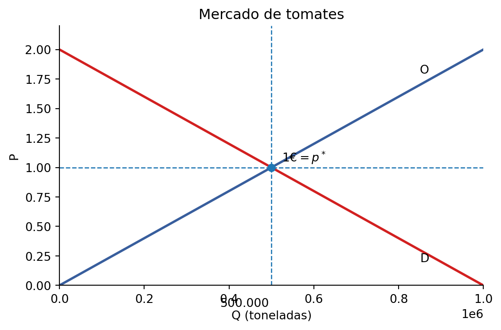
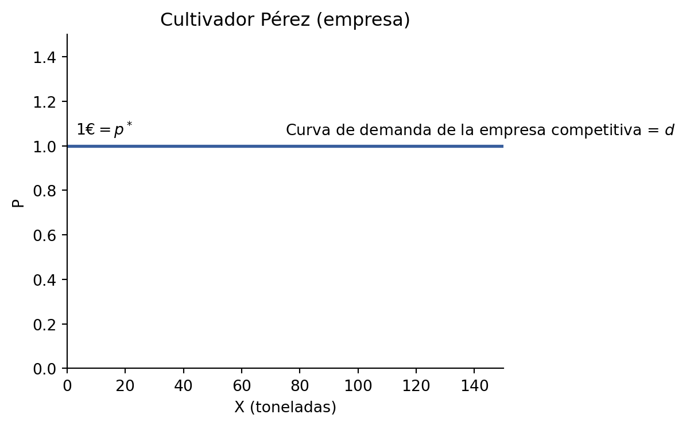
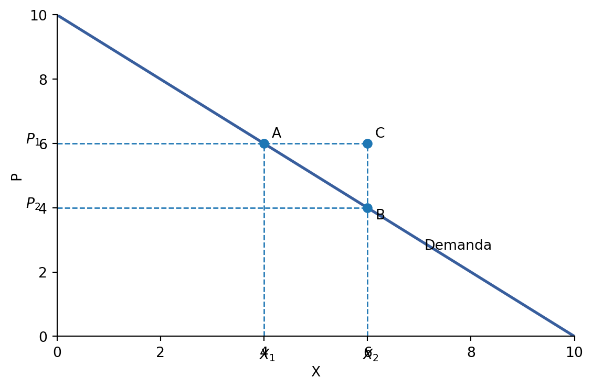
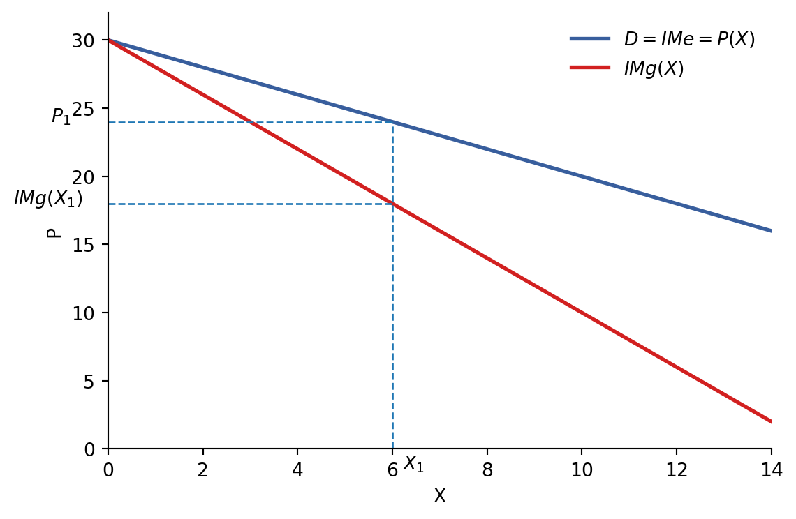
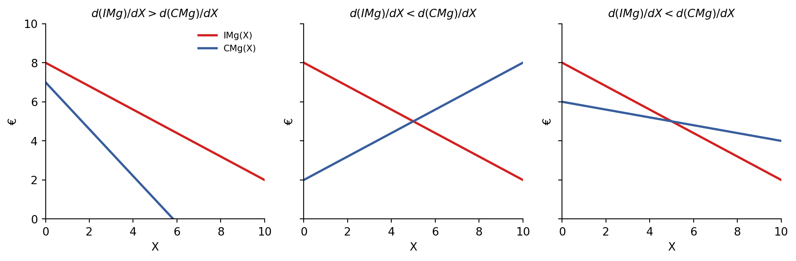
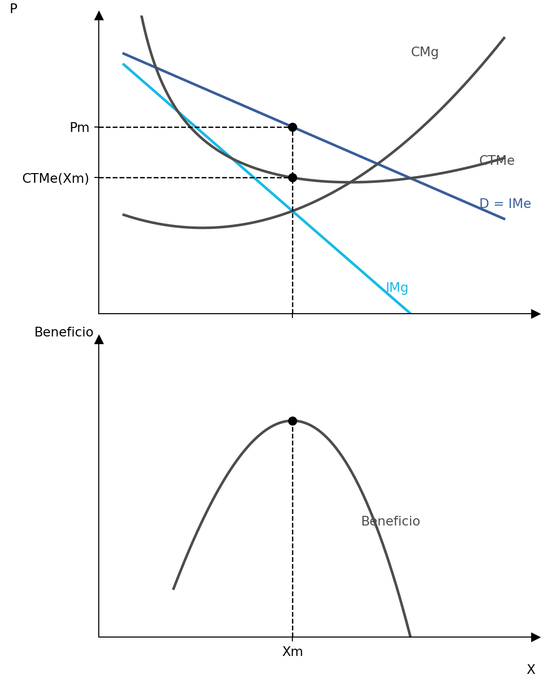
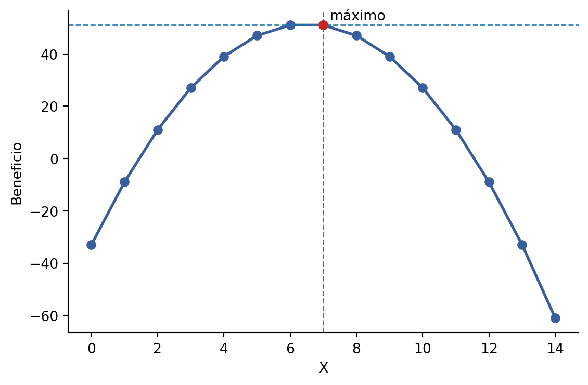
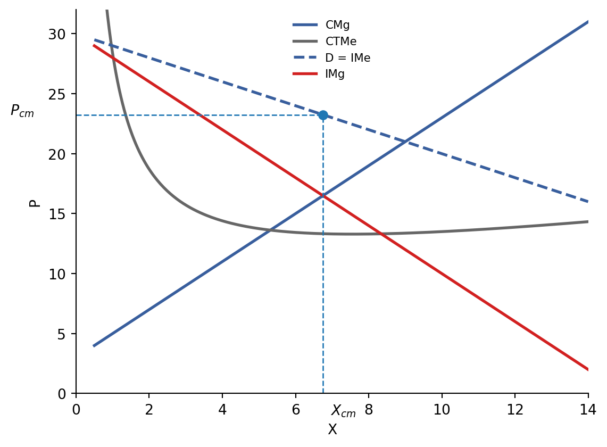

5 Los mercados no competitivos
5.1 Contenidos
El tema se organiza en torno a tres bloques:
- El monopolio: características e ingresos; maximización del beneficio y elección de la cantidad óptima.
- La competencia monopolística: principales características.
- El oligopolio: principales características.
5.2 Introducción: competencia perfecta vs. imperfecta
En competencia perfecta, la empresa individual no tiene ninguna capacidad para afectar al precio del producto.
En los mercados no competitivos, sí tiene cierta capacidad para fijar el precio. Esta capacidad se denomina poder de mercado.
5.3 El monopolio
5.3.1 Características e ingresos
En el monopolio, a diferencia de la competencia perfecta, el mercado está concentrado en una única empresa. La comparación básica entre ambos tipos de mercado se resume en la Tabla 5.1.
| Pregunta | Competencia perfecta | Monopolio |
|---|---|---|
| ¿Cuántas empresas participan en el mercado? | Actúan un gran número de empresas y cada una aporta una porción pequeña del total. El mercado está atomizado. | Actúa un único vendedor. El mercado está concentrado en una única empresa. |
| ¿El producto obtenido por todas las empresas es idéntico? | Sí, es idéntico. Producen bienes homogéneos. | Solo hay un vendedor y un tipo de producto. |
| ¿La empresa tiene capacidad para fijar el precio del producto cuando actúa individualmente? | No tiene capacidad. Lo fija el mercado. | Sí, tiene capacidad. Tiene gran poder de mercado, pero limitado por la curva de demanda. |
| ¿Existen barreras de entrada o salida del sector? | No. Hay libre concurrencia. | Sí. Si no existiesen, entrarían empresas y ya no sería un monopolio. |
5.3.2 Recordemos: la demanda en competencia perfecta
La curva de demanda a la que se enfrenta la empresa competitiva individual es horizontal.

5.3.3 La demanda a la que se enfrenta el monopolista
La curva de demanda a la que se enfrenta la empresa monopolista es la curva de demanda de todo el mercado.
La curva de demanda limita las posibilidades de elección del monopolista:
- Puede fijar el precio o la cantidad que lleva al mercado.
- Pero no puede establecer conjuntamente cualquier combinación de precio y cantidad que desee.
- La demanda supone una restricción para el monopolista.

La curva de demanda es decreciente:
- Solo puede vender más si acepta bajar el precio.
- Solo puede subir el precio si acepta vender menos.
La empresa monopolista decidirá producir la cantidad que haga máximo su beneficio, es decir, la cantidad que haga máxima la diferencia entre ingresos (\(IT\)) y costes (\(CT\)).
Si la empresa monopolista adquiere los factores productivos en mercados competitivos, el análisis de costes es igual al de las empresas en competencia perfecta. Por tanto, nos centramos en los ingresos.
5.3.4 Ingreso medio e ingreso marginal
La curva de ingreso medio es la curva de demanda de mercado:
\[ IMe(X)=\frac{IT}{X}=\frac{P(X)\cdot X}{X}=P(X) \]
El ingreso medio es igual al precio unitario para cada cantidad.
El ingreso marginal (\(IMg\)) mide la variación de \(IT\) cuando la producción se incrementa en una unidad:
\[ IMg(X)=\frac{\Delta IT(X)}{\Delta X} \]
La cuestión clave es la relación entre el ingreso marginal (\(IMg\)) y el ingreso medio (\(IMe\)) o precio (\(P\)). En competencia perfecta, el precio no dependía de \(X\). En monopolio, sí.
5.3.5 Recordemos: ingresos y costes en competencia perfecta
En competencia perfecta, la empresa es tomadora de precios. Maximiza beneficio donde \(IMg = CMg\), esto es, donde \(P = CMg\).
| PT | CT | CTMe | CMg | P | IT | IMg | Bº | Δ Bº |
|---|---|---|---|---|---|---|---|---|
| 1 | 14 | 14 | — | 5 | 5 | — | −9 | — |
| 2 | 19 | 9.5 | 5 | 5 | 10 | 5 | −9 | 0 |
| 3 | 22 | 7.33 | 3 | 5 | 15 | 5 | −7 | +2 |
| 4 | 24 | 6 | 2 | 5 | 20 | 5 | −4 | +3 |
| 5 | 25 | 5 | 1 | 5 | 25 | 5 | 0 | +4 |
| 6 | 27 | 4.5 | 2 | 5 | 30 | 5 | 3 | +3 |
| 7 | 30 | 4.29 | 3 | 5 | 35 | 5 | 5 | +2 |
| 8 | 34 | 4.25 | 4 | 5 | 40 | 5 | 6 | +1 |
| 9 | 39 | 4.33 | 5 | 5 | 45 | 5 | 6 | 0 |
| 10 | 45 | 4.5 | 6 | 5 | 50 | 5 | 5 | −1 |
| 11 | 52 | 4.73 | 7 | 5 | 55 | 5 | 3 | −2 |
| 12 | 60 | 5 | 8 | 5 | 60 | 5 | 0 | −3 |
| 13 | 69 | 5.31 | 9 | 5 | 65 | 5 | −4 | −4 |
| 14 | 79 | 5.64 | 10 | 5 | 70 | 5 | −9 | −5 |
| 15 | 90 | 6 | 11 | 5 | 75 | 5 | −15 | −6 |
En esta tabla, la producción se expresa en toneladas y las magnitudes monetarias en miles de euros. La variación del beneficio es \(\Delta Bº = IMg - CMg\).
5.3.6 Ingresos en monopolio
En un monopolio, el precio varía con la producción.
| P | Xd | IT | IMg | CT | CMg | Bº | Δ Bº |
|---|---|---|---|---|---|---|---|
| 30 | 0 | 0 | — | 33 | — | −33 | — |
| 29 | 1 | 29 | 29 | 38 | 5 | −9 | +24 |
| 28 | 2 | 56 | 27 | 45 | 7 | 11 | +20 |
| 27 | 3 | 81 | 25 | 54 | 9 | 27 | +16 |
| 26 | 4 | 104 | 23 | 65 | 11 | 39 | +12 |
| 25 | 5 | 125 | 21 | 78 | 13 | 47 | +8 |
| 24 | 6 | 144 | 19 | 93 | 15 | 51 | +4 |
| 23 | 7 | 161 | 17 | 110 | 17 | 51 | 0 |
| 22 | 8 | 176 | 15 | 129 | 19 | 47 | −4 |
| 21 | 9 | 189 | 13 | 150 | 21 | 39 | −8 |
| 20 | 10 | 200 | 11 | 173 | 23 | 27 | −12 |
| 19 | 11 | 209 | 9 | 198 | 25 | 11 | −16 |
| 18 | 12 | 216 | 7 | 225 | 27 | −9 | −20 |
| 17 | 13 | 221 | 5 | 254 | 29 | −33 | −24 |
| 16 | 14 | 224 | 3 | 285 | 31 | −61 | −28 |
Para la primera unidad, \(IMg = P\), ya que \(29 - 0 = 29\). Para el resto de unidades, \(IMg < P\); por ejemplo, al pasar de una a dos unidades, \(56 - 29 = 27\), mientras que el precio correspondiente es 28.

5.4 Beneficio y producción óptima del monopolio
El \(IMg\) es importante en la decisión del productor. El beneficio del monopolista es:
\[ Bº = IT - CT \]
El beneficio será máximo en el nivel de producción en el que el ingreso marginal es igual al coste marginal:
\[ \frac{dBº}{dX}=\frac{d(IT)}{dX}-\frac{d(CT)}{dX}=0 \quad \Rightarrow \quad \frac{d(IT)}{dX}=\frac{d(CT)}{dX} \]
Por tanto:
\[ IMg = CMg \]
La condición de máximo se expresa como:
\[ \frac{d^2Bº}{dX^2}=\frac{d(IMg)}{dX}-\frac{dCMg}{dX}<0 \quad \Rightarrow \quad \frac{d(IMg)}{dX}<\frac{d(CMg)}{dX} \]
Esta condición garantiza que se trata de un máximo.

El razonamiento económico es el siguiente:
- \(IMg\) indica cuánto aumenta el \(IT\) al producir una unidad más.
- \(CMg\) indica cuánto aumenta el \(CT\) al producir una unidad más.
- Cuando \(IMg > CMg\), el monopolista debe aumentar su producción en una unidad, ya que el beneficio crece.
- Cuando \(IMg < CMg\), el monopolista NO debe aumentar su producción, ya que el beneficio decrece.
En el ejemplo numérico de la Tabla 5.3, el beneficio se maximiza donde \(IMg = CMg\). La igualdad se alcanza en \(X = 7\), con \(IMg = 17\), \(CMg = 17\) y \(Bº = 51\).


Gráficamente, el monopolista elige la producción en el punto donde \(IMg = CMg\) y, después, fija el precio correspondiente sobre la curva de demanda.
El monopolista no tiene curva de oferta. No es posible encontrar una relación única entre el precio y la cantidad que decide producir: depende de la curva de demanda. Solo hay curva de oferta en los mercados en que la empresa toma el precio como dado.
5.5 La competencia monopolística
Los mercados de competencia monopolística se sitúan entre la competencia perfecta y el monopolio. Por tanto, tienen características de ambos mercados.
| Pregunta | Competencia perfecta | Competencia monopolística |
|---|---|---|
| ¿Cuántas empresas participan en el mercado? | Actúan un gran número de empresas y cada una aporta una porción pequeña del total. El mercado está atomizado. | Actúan un gran número de empresas y cada una aporta una porción pequeña del total. El mercado está atomizado. |
| ¿El producto obtenido por todas las empresas es idéntico? | Sí, es idéntico. Producen bienes homogéneos. | No, no es idéntico. Producen bienes muy similares pero diferenciados. |
| ¿La empresa tiene capacidad para fijar el precio del producto cuando actúa individualmente? | No tiene capacidad. Lo fija el mercado. | Sí, tiene capacidad limitada. Cada empresa puede vender su producto un poco más caro que sus competidores, sin perder a todos sus clientes. |
| ¿Existen barreras de entrada o salida del sector? | No. Hay libre concurrencia. | No. Hay libre concurrencia. |
Ejemplos: pequeño comercio, bares, restaurantes.
El equilibrio de la empresa a corto plazo es igual que en monopolio. Al igual que el monopolista, puede obtener beneficio extraordinario, pero este beneficio solo se puede mantener en el corto plazo: dado que no existen barreras de entrada, este beneficio actúa como incentivo para la entrada de nuevas empresas.
La diferencia clave entre monopolio y competencia monopolística se refiere a las barreras de entrada.

5.6 El oligopolio
| Pregunta | Competencia perfecta | Oligopolio |
|---|---|---|
| ¿Cuántas empresas participan en el mercado? | Actúan un gran número de empresas y cada una aporta una porción pequeña del total. El mercado está atomizado. | Actúan pocas empresas y cada una aporta una porción grande del total. |
| ¿El producto obtenido por todas las empresas es idéntico? | Sí, es idéntico. Producen bienes homogéneos. | Puede ser idéntico (petróleo) o no (coches). Supondremos que sí es idéntico. |
| ¿La empresa tiene capacidad para fijar el precio del producto cuando actúa individualmente? | No tiene capacidad. Lo fija el mercado. | Sí, tiene capacidad limitada. Este poder disminuye al aumentar el número de empresas. |
| ¿Existen barreras de entrada o salida del sector? | No. Hay libre concurrencia. | Sí. Si no existiesen, entrarían más empresas y no habría tan pocas. |
El rasgo fundamental del oligopolio es la interdependencia de las acciones. La decisión de una empresa, como modificar la producción o el precio, afecta a las demás.
A la hora de tomar su decisión, la empresa tiende a prever la reacción de sus rivales. Esto se denomina comportamiento estratégico.
La interdependencia y el comportamiento estratégico complican el análisis: no basta la maximización del beneficio. Hay que introducir nuevos supuestos, dando lugar a diferentes modelos de oligopolio.
La rama de la ciencia económica que estudia el comportamiento estratégico de los agentes económicos y su resultado final se denomina teoría de juegos.